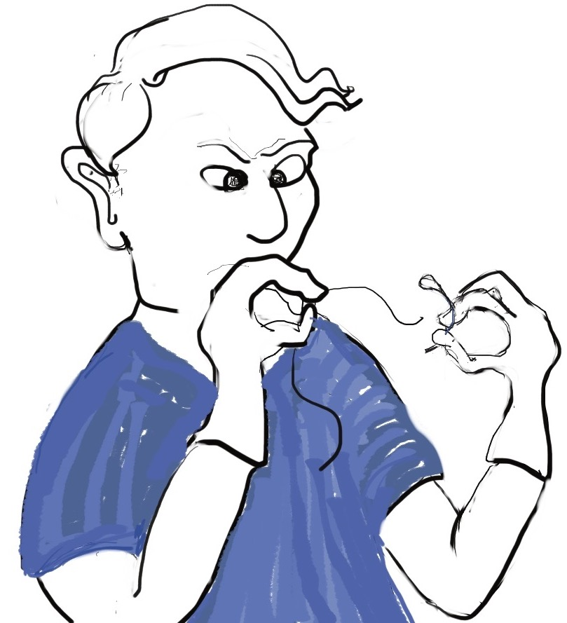
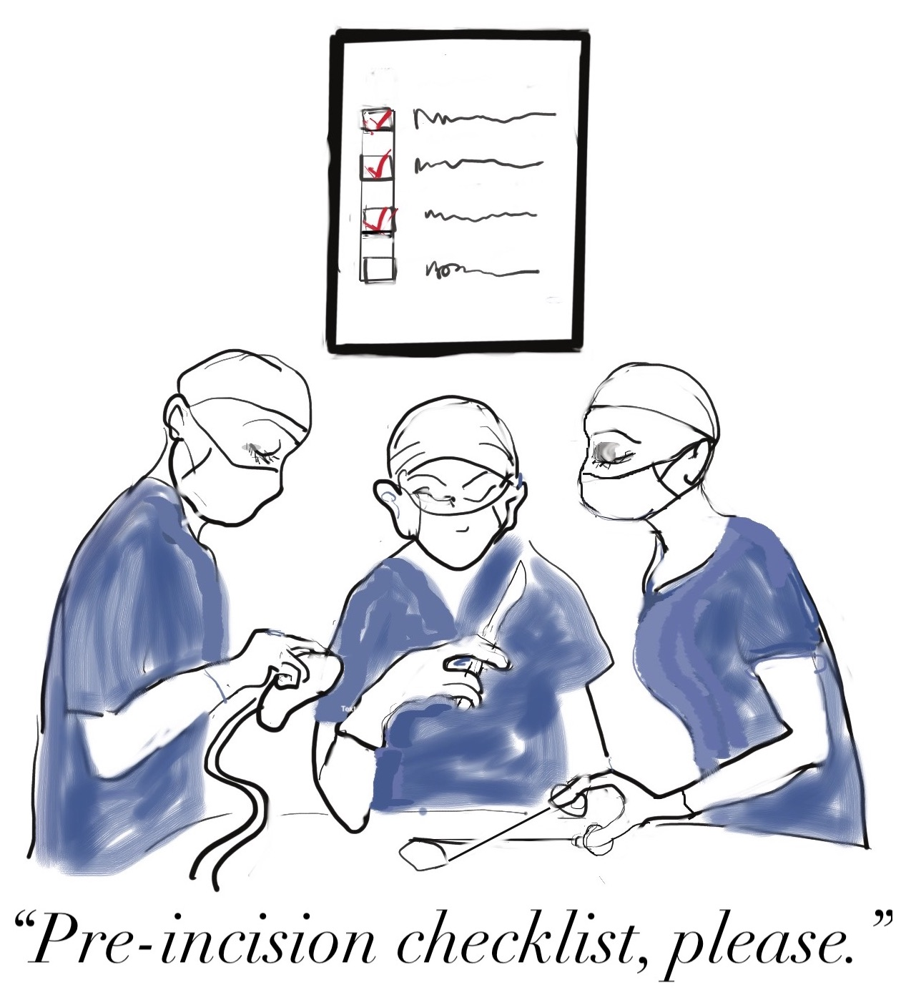

The difference between a tutorial and how-to guide¶
In Diátaxis, tutorials and how-to guides are strongly distinguished. It’s a distinction that’s often not made; in fact the single most common conflation made in software product documentation is that between the tutorial and the how-to guide.
So: what is the difference between tutorials and how to-guides? Why does it matter? And why do they get confused?
These are all good questions. Let’s start with the last one. If the distinction is really so important, why isn’t it more obvious?
What they have in common¶
In important respects, tutorials and how-to guides are indeed similar. They are both practical guides: they contain directions for the user to follow. They’re not there to explain or convey information. They exist to guide the user in what to do rather than what there is to know or understand.
They both set out steps for the reader to follow, and they both promise that if the reader follows those steps, they’ll arrive at a successful conclusion. Neither of them make much sense except for the user who has their hands on the machinery, ready to do things. They both describe ordered sequences of actions. You can’t expect success unless you perform the actions in the right order.
They are closely related, and like many close relations, can be mistaken for one another at first glance.
What matters is what the user needs¶
Diátaxis insists that what matters in documentation is the needs of the user, and it’s by paying attention to this that we can correctly distinguish between tutorials and how-to guides.
Sometimes the user is at study, and sometimes the user is at work. Documentation has to serve both those needs.
A tutorial serves the needs of the user who is at study. Its obligation is to provide a successful learning experience. A how-to guide serves the needs of the user who is at work. Its obligation is to help the user accomplish a task. These are completely different needs and obligations, and they are why the distinction between tutorials and how-to guides matters: tutorials are learning-oriented, and how-to guides are task-oriented.
At study and at work¶
We can consider this from the perspective of an actual example. Let’s say you’re in medicine: a doctor, someone who needs to acquire and apply the practical, clinical skills of their craft.
As a doctor, sometimes you will be in work situations, applying your skills, and sometimes you will be in study situations, acquiring skills (all good doctors, even those with long careers behind them, continue to study to improve their skills).
At study¶
Early on in your training, you’ll learn how to suture a wound. You’ll start in the lab with your fellow students, at benches with small skin pads in front of you (skin pads are blocks of synthetic material in various layers that represent the epidermis, fat and other tissues. They have a similar hardness and texture to human flesh, and behave somewhat similarly when they’re cut and stitched). You’ll be provided with exactly what you need - gloves, scalpel, needle, thread and so on - and step-by-step you’ll be shown what to do, and what will happen when you do it.
And then it’s your turn. You will pick up the scalpel and tentatively draw it across the top of the pad, and make an ineffectual incision into the top layer (maybe a teaching assistant will tease you, asking what this poor pad has done, that it deserves such a nasty scratch). Your neighbour will look dismayed at their own attempt, a ragged cut of wildly uneven depths that looks like something from a knife-fight.
After a few attempts, with feedback and correction from the tutor, you’ll have made a more or less clean cut that mostly goes through the fat layer without cutting into the muscle beneath. Triumph!

But now you’re being asked to stitch it back up again! You’ll watch the tutor demonstrate deftly and precisely, closing the wound in the pad with a few neat, even stitches. You, on the other hand, will fumble with the thread. You will hold things in the wrong hand and the wrong way round and put them down in the wrong places. You will drop the needle. The thread will fall out. You will be told off for failing to maintain sterility.
Eventually, you’ll actually get to stitch the wound. You will puncture the skin in the wrong places and tear the edges of the cut. Your final result will be an ugly scene of stretched and puckered skin and crude, untidy stitches. The teaching assistants will have some critical things to say even about parts of it that you thought you’d got right.
But, you will have stitched your first wound. And you will come back to this lesson again and again, and bit by bit your fumbling will turn into confident practice. You will have acquired basic competence. You will have learned by doing.
This is a tutorial. It’s a lesson, safely in the hands of an instructor, a teacher who looks after the interests of a pupil.
At work¶
Now, let’s think about the doctor at work. As a doctor at work, you are already competent. You have learned and refined clinical skills such as suturing, as well as many others, and you’re able to put them together on a daily basis to apply them to medical situations in the real world.
Consider a standard appendectomy. A clinical manual will list the equipment and personnel required in the theatre. It will show how to station the members of the team, and how to lay out the required tools, stands and monitors. It will proceed step-by-step through the actions the team will need to follow, ending with the formal handover to the post-operative team.

The manual will show what incisions need to be made where, but they will depend on whether you’re performing an open or a laparoscopic procedure, whether you have pre-operative imaging to rely on or not, and so on. It will include special steps or checks to be made in the case of an infant or juvenile patient, or when converting to an open appendectomy mid-procedure. Many of the steps will be of the form if this, then that.
Having a manual helps ensure that all the steps are done in the right order and none are omitted. As a team, you’ll check through details of a procedure to remind yourselves of key steps; sometimes you’ll refer to it during the procedure itself.
Even for routine surgical operations, clinical manuals contain lists of steps and checks. These manuals are how-to guides. They are not there to teach you - you already have your skills. You already know these processes. They are there to guide you safely in your clinical practice to accomplish a particular task - they serve your work.
Understanding the distinction¶
The distinction between a lesson in medical school and a clinical manual is the distinction between a tutorial and a how-to guide.
A tutorial’s purpose is to help the pupil acquire basic competence.
A how-to guide’s purpose is to help the already-competent user perform a particular task correctly.
A tutorial provides a learning experience. People learn skills through practical, hands-on experience. What matters in a tutorial is what the learner does, and what they experience while doing it.
A how-to guide directs the user’s work.
The tutorial follows a carefully-managed path, starting at a given point and working to a conclusion. Along that path, the learner must have the encounters that the lesson requires.
The how-to guide aims for a successful result, and guides the user along the safest, surest way to the goal, but the path can’t be managed: it’s the real world, and anything could appear to disrupt the journey.
A tutorial familiarises the learner with the work: with the tools, the language, the processes and the way that what they’re working with behaves and responds, and so on. Its job is to introduce them, manufacturing a structured, repeatable encounter with them.
The how-to guide can and should assume familiarity with them all.
The tutorial takes place in a contrived setting, a learning environment where as much as possible is set out in advance to ensure a successful experience.
A how-to guide applies to the real world, where you have to deal with what it throws at you.
The tutorial eliminates the unexpected.
The how-to guide must prepare for the unexpected, alerting the user to its possibility and providing guidance on how to deal with it.
A tutorial’s path follows a single line. It doesn’t offer choices or alternatives.
A how-to guide will typically fork and branch, describing different routes to the same destination: If this, then that. In the case of …, an alternative approach is to…
A tutorial must be safe. No harm should come to the learner; it must always be possible to go back to the beginning and start again.
A how-to guide cannot promise safety; often there’s only one chance to get it right.
In a tutorial, responsibility lies with the teacher. If the learner gets into trouble, that’s the teacher’s problem to put right.
In a how-to guide, the user has responsibility for getting themselves in and out of trouble.
The learner may not even have sufficient competence to ask the questions that a tutorial answers.
A how-to guide can assume that the user is asking the right questions in the first place.
The tutorial is explicit about basic things - where to do things, where to put them, how to manipulate objects. It addresses the embodied experience - in our medical example, how hard to press, how to hold an implement; in a software tutorial, it could be where to type a command, or how long to wait for a response.
A how-to guide relies on this as implicit knowledge - even bodily knowledge.
A tutorial is concrete and particular in its approach. It refers to the specific, known, defined tools, materials, processes and conditions that we have carefully set before the learner.
The how-to guide has to take a general approach: many of these things will be unknowable in advance, or different in each real-world case.
The tutorial teaches general skills and principles that later could be applied to a multitude of cases.
The user following a how-to guide is doing so in order to complete a particular task.
None of these distinctions are arbitrary. They all emerge from the distinction between study and work, which we understand as a key distinction in making sense of what the user of documentation needs.
The basic and the advanced¶
A common but understandable conflation is to see the difference between tutorials and how-to guides as being the difference between the basic and the advanced.
After all, tutorials are for learners, while how-to guides are for already-skilled practitioners. Tutorials must cover the basics, while how-to guides have to deal with complexities that learners should not have to face.
However, there’s more to the story. Consider a clinical procedure manual: it could be a manual for a basic routine procedure, of very low complexity. It could describe steps for mundane matters such as correct completion of paperwork or disposal of particular materials. How-to guides can, do and often should cover basic procedures.
At the same time, even as a qualified doctor, you will find yourself back in training situations. Some of them may be very advanced and specialised, requiring a high level of skill and expertise already.
Let’s say you’re an anaesthetist of many years’ experience, who attends a course: “Difficult neonatal intubations”. The practical part of the course will be a learning experience: a lesson, safely in the hands of the instructors, that will have you performing particular exercises to develop your skills - just as it was when years earlier, you were learning to suture your first wound.
The complexity is wholly different though, and so is the baseline of skills required even to participate in the learning experience. But, it’s of the same form, and serves the same kind of need, as that much earlier lesson.
It’s the same in software documentation: a tutorial can present something complex or advanced. And, a how-to guide can cover something that’s basic or well-known. The difference between the two lies in the need they serve: the user’s study, or their work.
Safety and success¶
Understanding these distinctions, and the reason for upholding them, is crucial to creating successful documentation. A clinical manual that conflated education with practice, that tried to teach while at the same time providing a guide to a real-world procedure would be a literally deadly document. It would kill people.
In disciplines such as software documentation, we get away with a great deal, because our conflations and mistakes rarely kill anyone. However, we can cause a great deal of low-level inconvenience and unhappiness to our users, and we add to it, every single time we publish a tutorial or how-to guide that doesn’t understand whether its purpose is to help the user in their study - the acquisition of skills - or in their work - the application of skills.
What’s more, we hurt ourselves too. Users don’t have to use our product. If our documentation doesn’t bring them to success - if it doesn’t meet the needs that they have at a particular stage in their cycle of interaction with our product - they will find something else that does, if they can.
The conflation of tutorials and how-to guides is by no means the only one made between different kinds of documentation, but it’s one of the easiest to make. It’s also a particularly harmful one, because it risks getting in the way of those newcomers whom we hope to turn into committed users. For the sake of those users, and of our own product, getting the distinction right is a key to success.